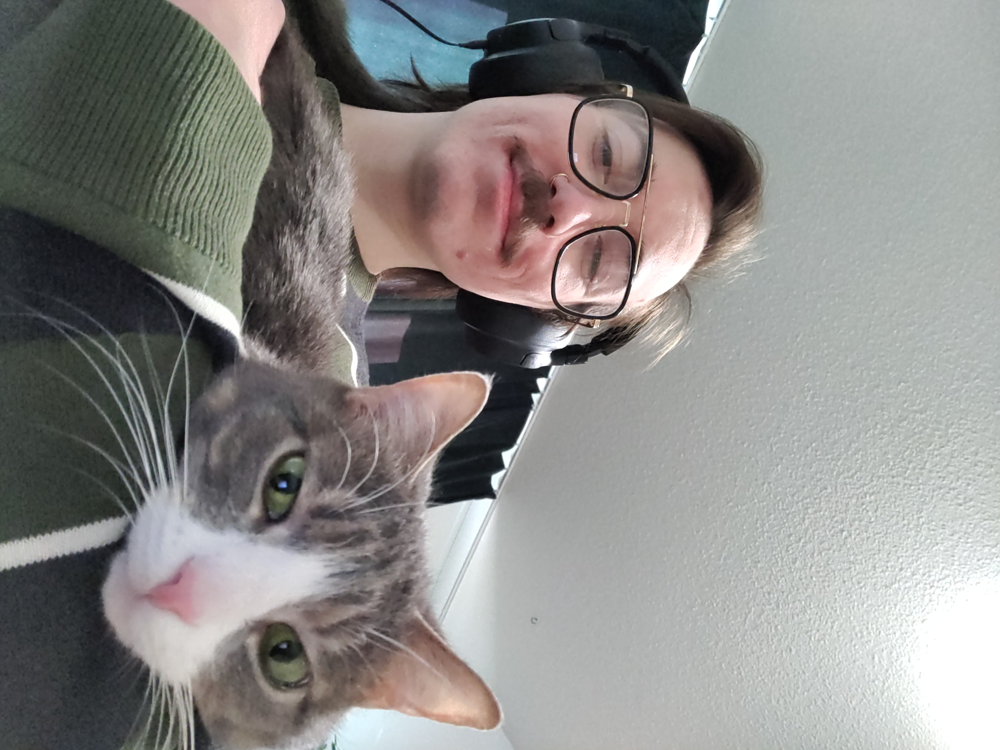
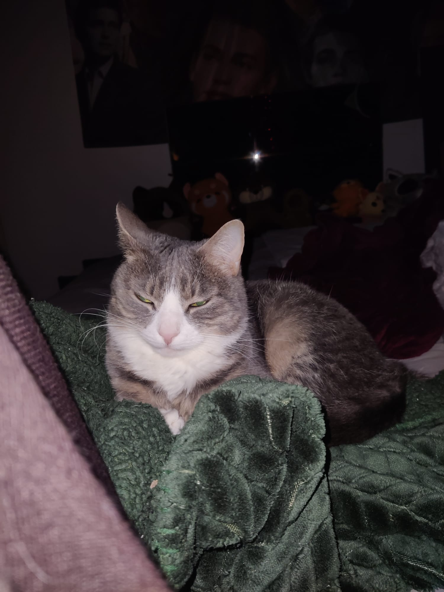
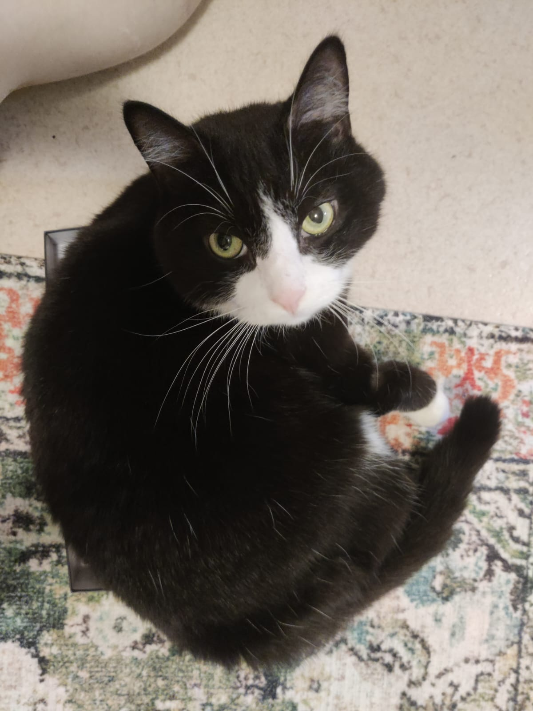

Ylioppilastutkinto
Loviisan Lukio
Ohjelmistokehittäjä | Opiskelija

Olen 25-vuotias ja opiskelen tieto- ja viestintätekniikan perustutkintoa SAKKY:ssa. Olen kotoisin Kouvolasta mutta asun nykyään Kuopiossa kahden kissan ja avopuolison kanssa. Vapaa-ajalla tykkään pelata tietokoneella, kehittää pelejä sekä kuntoilla ja kokkailla. Minua kiinnostaa erityisesti pelikehitys ja seuraan aktiivisesti teknologia-alan uutisia. Hamstraan kaikkea hyödyllistä kuin hyödytöntäkin tietoa ja pyrin jatkuvasti kehittämään itseäni ja osaamistani niin ammatillisesti kuin henkilökohtaisestikin.
Tässä ovat kissamme Hertta ja Hugo:


Loviisan Lukio
Tieto- ja viestintätekniikan perustutkinto, SAKKY Kuopio
Savonia-ammattikorkeakoulu
Loval OY
Kuopion Talokeskus OY
Ecomond OY
Kuopion Talokeskus OY
WIP-kysymyspeliprojekti:
Roolini: fullstack-kehittäjä
Aika: käynnissä oleva projekti
Tehtävänä on tehdä TEO-jaksolle ennakkopeli, jolla varmistetaan, että opiskelija hallitsee keskeiset asiat ennen TEO-jaksoa. Teen projektia yksin itsenäisesti, joten toimin fullstack-kehittäjänä. Kuvia ja tietoja tulee lisää projektin edetessä.
Linkki projektiin GitHubissa: https://github.com/noco1/quiz_game.git
Weather App:
Roolini: backend-kehittäjä
Aika: 5 päivää
Tehtävänä oli suunnitella, toteuttaa ja dokumentoida sääpalvelu, joka näyttää käyttäjälle Kuopion alueen säätiedot tietyltä ajalta. Tehtävä oli vuoden 2023 Taitaja-kilpailujen semifinaali tehtävä ja ryhmätyö.
Tein projektin toisen opiskelijan kanssa parina. Projektissa päätehtäväni olivat backend, suunnittelu ja dokumentointi, mutta tein myös frontendiä jonkin verran, sekä integroin ne toisiinsa ja testasin.
Linkki projektiin GitHubissa: https://github.com/noco1/Taitaja_2023_semifinaalitehtava.git
PhoneShop:
Roolini: fullstack-kehittäjä
Aika: 5 päivää
Tehtävänä oli tehdä yksinkertainen puhelin- ja puhelintarvikekauppa, jossa käyttäjä voi kirjautua, selata tuotteita, lisätä niitä ostoskoriin, tehdä tilauksen sekä tarkastella tilaushistoriaansa. Projektissa käytin liian paljon aikaa backend osuuteen ja aika loppui kesken, joten ulkoasu on hyvin simppeli. Jatkoa ajatellen olisin halunnut hakea tuotetiedot ja kuvat suoraan ulkoisesta API-rajapinnasta.
Linkki projektiin GitHubissa: https://github.com/noco1/PhoneShop.git